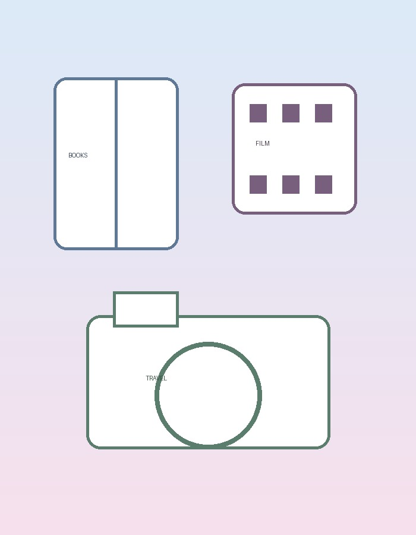

Books
I enjoy reading books on science, biographies, history, literature, and personal development.

I enjoy reading books on science, biographies, history, literature, and personal development.
I keep a personal record of films I have watched, together with ratings and short reflections.
I enjoy exploring new places, observing different cultures, and documenting memorable moments.